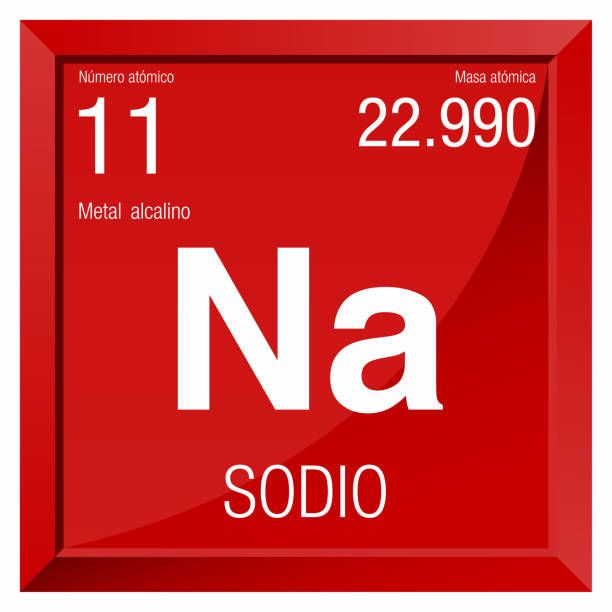

sodio
El sodio es un elemento esencial para todos los animales y algunas plantas. Los iones de sodio son el principal catión en el líquido extracelular y, como tal, son el principal contribuyente a la presión osmótica del LEC y al volumen del compartimento
Usos del sodio
-
En la fabricación de desodorantes (en combinación con ácidos grasos).
-
En la purificación de metales fundidos.
-
El sodio metálico también se emplea en los laboratorios en la desecación de disolventes.[
Tabla Periodica.
